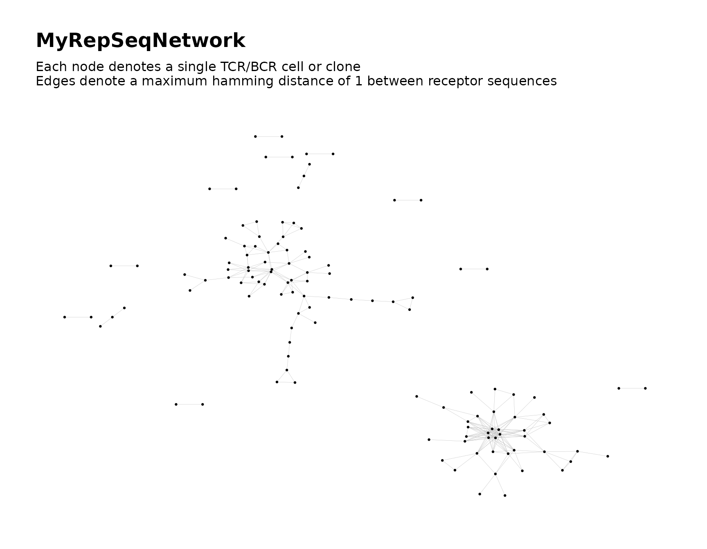
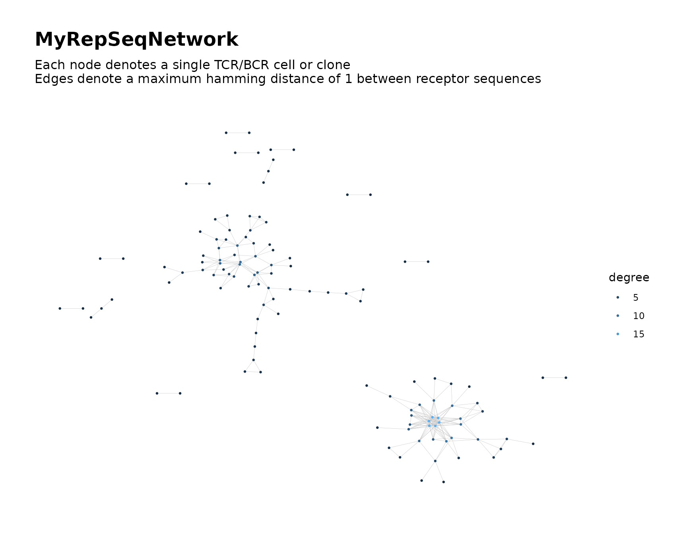

Introduction
General network analysis on Adaptive Immune Receptor Repertoire
Sequencing (AIRR-Seq) data is performed using the
buildRepSeqNetwork() function. This function does the
following:
- Filters the input AIRR-Seq data according to user specifications
- Builds the network graph for the immune repertoire
- Performs additional network analysis, which can include:
- Cluster analysis
- Computation of network properties
- Generates customizable visual plots of the network graph
- Saves and returns the following output:
- Metadata for the nodes in the network
- Metadata for the clusters in the network
- The plots of the network graph
- The network graph itself, both as an adjacency matrix and as an
igraphobject
In this vignette we demonstrate the function’s usage and output.
Simulate Data for Demonstration
We simulate some toy data for demonstration.
We simulate data consisting of two samples with 100 observations each, for a total of 200 observations (rows).
library(NAIR)
#> Welcome to the NAIR package. Get started using `vignette("NAIR", package = "NAIR")` or by visiting https://mlizhangx.github.io/Network-Analysis-for-Repertoire-Sequencing-/
dir_out <- tempdir()
toy_data <- simulateToyData()
head(toy_data)
#> CloneSeq CloneFrequency CloneCount SampleID
#> 1 TTGAGGAAATTCG 0.007873775 3095 Sample1
#> 2 GGAGATGAATCGG 0.007777102 3057 Sample1
#> 3 GTCGGGTAATTGG 0.009094910 3575 Sample1
#> 4 GCCGGGTAATTCG 0.010160859 3994 Sample1
#> 5 GAAAGAGAATTCG 0.009336593 3670 Sample1
#> 6 AGGTGGGAATTCG 0.010369470 4076 Sample1
nrow(toy_data)
#> [1] 200Primary Inputs
The buildRepSeqNetwork() function has two required
arguments for specifying the input data.
- The function’s first argument
dataaccepts a data frame containing the AIRR-seq data, where each row corresponds to a single TCR/BCR clone (bulk data) or cell (single-cell data). - The second argument
seq_colspecifies the data column containing the receptor sequences to be used as the basis of similarity between two cells or clones. This argument accepts either the column name (e.g.,seq_col = "CloneSeq") or the column index (e.g.,seq_col = 1, denoting the first column).
For single-cell data, see this vignette on building networks based on joint similarity in both alpha chain sequences and beta chain sequences.
Below, we execute the buildRepSeqNetwork() function. A
visual plot of the network graph is automatically printed to the
plotting window in R.
output <- buildRepSeqNetwork(toy_data, seq_col = "CloneSeq",
output_dir = dir_out
)
#> Input data contains 200 rows.
#> Removing sequences with length fewer than 3 characters... Done. 200 rows remaining.
#> Computing network edges based on a max hamming distance of 1... Done.
#> Network contains 122 nodes (after removing isolated nodes).
#> Generating graph plot...
#> Done.
#> Node-level meta-data saved to file:
#> /tmp/Rtmpu6X8US/MyRepSeqNetwork_NodeMetadata.csv
#> Network graph plots saved to file:
#> /tmp/Rtmpu6X8US/MyRepSeqNetwork.pdf
#> Network igraph saved in edgelist format to file:
#> /tmp/Rtmpu6X8US/MyRepSeqNetwork_EdgeList.txt
#> Adjacency matrix saved to file:
#> /tmp/Rtmpu6X8US/MyRepSeqNetwork_AdjacencyMatrix.mtxBase Output
When no optional arguments are used, the
buildRepSeqNetwork() function returns a list containing the
following elements:
names(output)
#> [1] "igraph" "adjacency_matrix" "node_data" "plots"We describe each of these list elements below.
node_data
The list element node_data is a data frame containing
metadata for the network nodes, where each row corresponds to a node in
the network graph:
head(output$node_data)
#> CloneSeq CloneFrequency CloneCount SampleID
#> 2 GGAGATGAATCGG 0.007777102 3057 Sample1
#> 5 GAAAGAGAATTCG 0.009336593 3670 Sample1
#> 8 GGGGAGAAATTGG 0.006220155 2445 Sample1
#> 11 GGGGGAGAATTGC 0.012969469 5098 Sample1
#> 12 GGGGGGGAATTGC 0.009079646 3569 Sample1
#> 13 AGGGGGAAATTGG 0.014941093 5873 Sample1By default, all variables (data columns) from the original input
AIRR-seq data are present in the returned node data. This can be changed using the
subset_cols argument.
The row names from the original input data are preserved in the returned node data. This allows the user to match rows of the input data with their corresponding rows in the node data.
Notice from the row names that some rows from the original input data
are missing in the returned node data. This is because by default, only
those nodes that are connected to at least one other node by an edge
will be kept in the network. This can be
changed using the drop_isolated_nodes argument.
plots
The list element plots is a list containing each of the
plot(s) created by buildRepSeqNetwork(). Each plot is an
object of class ggraph (which inherits from the
ggplot class), and is named according to the variable used
to color the nodes. Here the nodes are not colored according to any
variable, so the name of the plot is uniform_color.
names(output$plots)
#> [1] "uniform_color"
class(output$plots$uniform_color)
#> [1] "ggraph" "gg" "ggplot"Plots can be customized through optional arguments to
buildRepSeqNetwork() as well as by modifying
them after they are created.
igraph
The list element igraph is an object of class
igraph from the igraph
package. This object contains the list of nodes and edges that
comprise the network graph.
The igraph object can be used for downstream computation of network properties, as
an alternative to computing network
properties when calling buildRepSeqNetwork(). It can
also be used to generate
additional plots of the network graph.
class(output$igraph)
#> [1] "igraph"
adjacency_matrix
The list element adjacency_matrix is an object of class
dgCMatrix, which is a sparse matrix format from the
Matrix package.
class(output$adjacency_matrix)
#> [1] "dgCMatrix"
#> attr(,"package")
#> [1] "Matrix"The network adjacency matrix encodes the graph (i.e., the set of nodes and edges) as a matrix. It is symmetric, with each row (equivalently, each column) corresponding to a distinct network node. The network nodes follow the same order in the rows as they do in the columns. Each column name is the receptor sequence corresponding to the node for that column. Each row name is the row index of the original input data that corresponds to the node for that row.
# First 5 rows and columns of the network adjacency matrix
head(output$adjacency_matrix, c(5, 5))
#> 5 x 5 sparse Matrix of class "dgCMatrix"
#> GGAGATGAATCGG GAAAGAGAATTCG GGGGAGAAATTGG GGGGGAGAATTGC GGGGGGGAATTGC
#> 2 1 . . . .
#> 5 . 1 . . .
#> 8 . . 1 . .
#> 11 . . . 1 1
#> 12 . . . 1 1Each matrix entry has a value of 0 or 1, with 1 indicating an edge connecting the node for that row to the node for that column, and 0 indicating no edge connection. Although the diagonal entries are 1, their values are not meaningful, since an edge is not drawn from a given node to itself.
Note that the rows (nodes) in the adjacency matrix correspond to the
rows (nodes) in the node_data data frame. Both have the
same number of rows and the same row names.
The adjacency matrix can be used for downstream
computation of network properties, as an alternative to computing network properties when calling
buildRepSeqNetwork().
Filtering the Input Data
Any rows of the input data having a value of NA for
their receptor sequence (the value in the column specified by the
seq_col argument) will be automatically removed prior to
building the network.
The following options are useful for removing noise or irrelevant data from the analysis, potentially improving the quality of the network graph and downstream analysis results.
min_seq_length
This parameter is used to filter out TCR/BCR sequences below a
certain length. The argument accepts a numeric value that specifies the
minimum sequence length. Every data row whose sequence length is below
this value will be dropped before constructing the network graph. The
receptor sequence is the value in the column specified by the seq_col argument.
By default, the minimum sequence length is set to 3.
This check can be bypassed by setting
min_seq_length = NULL.
drop_matches
This parameter can be optionally used to filter out TCR/BCR sequences
with content matching a certain pattern. The argument accepts a
character string containing a regular expression that specifies the
pattern of content to search for (see ?regex). Each TCR/BCR
sequence is checked for a match with the specified content pattern.
Every data row whose sequence matches the pattern is dropped before
constructing the network graph.
The receptor sequence is the value in the column specified by the seq_col argument. It is checked for a
match with the specified content pattern using grep().
Network Settings
The settings used to construct the network can be customized using the arguments below.
Distance Function
The default method for measuring the similarity between TCR/BCR
sequences is the Hamming distance, which is computed using
hamDistBounded(). It calculates the number of differences
between two sequences of the same length. For each position in one
sequence, the character in that position is checked to see whether it
differs from the character in the same position of the other sequence.
If the sequences have different lengths, the shorter sequence is
extended by adding non-matching characters to make it the same length as
the longer sequence.
The Levenshtein distance, which is computed using
levDistBounded(), can be used as an alternative measurement
to determine the similarity between sequences. It calculates the minimum
number of single-character edits (insertions, deletions and
transformations) needed to transform one sequence into the other. This
method is particularly useful for comparing sequences of different
lengths and can account for insertions and deletions. When constructing
a network based on the similarity of CDR-3 nucleotide sequences, it is
preferable to use the Levenshtein distance instead of the default
Hamming distance by setting the argument
dist_type = "levenshtein". However, the Levenshtein
distance requires significantly more computational time than the Hamming
distance, which may be challenging when working with large data sets
having long TCR/BCR sequences.
Distance Cutoff
The distance function specified in the dist_type
argument (Hamming distance by default) is used to quantify the
similarity between TCR/BCR sequences. The chosen distance measurement
determines the distance between two nodes in the network graph.
By default, two nodes in the graph are connected by an edge if their
distance is at most 1. However, if users want to adjust this cutoff, the
dist_cutoff argument can be set to a different value. For
example, if dist_cutoff = 2, then two nodes will be
connected by an edge if their distance is at most 2.
The cutoff value controls the stringency of the network construction
and affects the number and density of edges in the network. A lower
cutoff value requires greater similarity between sequences in order for
their respective nodes to be joined by an edge connection. If
dist_cutoff = 0, two sequences must be identical in order
for their nodes to be joined by an edge.
Keep/Remove Isolated Nodes
By default, if a given node has no edges connecting it to any other nodes in the network, it will be removed from the network graph and will not be included in the output.
Notice that while our input data contained 200 rows, the
node_data data frame in the returned output contains fewer
rows than this:
nrow(output$node_data)
#> [1] 122These rows correspond to the nodes that are joined by an edge to at least one other node in the network.
The row names from the original input data are preserved, allowing the user to conveniently cross-reference each node with its corresponding row in the original input data.
If desired, all nodes can be kept in the network, including those
that do not have any edge connections to other nodes. This is
accomplished by setting the drop_isolated_nodes argument to
FALSE.
Network Properties and Cluster Analysis
The buildRepSeqNetwork() function can perform additional
network analysis after constructing the network. This includes cluster
analysis and computation of network properties. Cluster analysis
partitions the network graph into densely-connected subgraphs, while
network properties describe the structural organization of the
network.
Node-Level Network Properties
Description
Node-level network properties are properties that pertain to each individual node in the network graph.
Some are local properties, meaning that their value for a given node depends only on a subset of the nodes in the network. One example is the network degree of a given node, which represents the number of other nodes that are directly joined to the given node by an edge connection.
Other properties are global properties, meaning that their value for a given node depends on all of the nodes in the network. An example is the authority score of a node, which is computed using the entire graph adjacency matrix (if we denote this matrix by \(A\), then the principal eigenvector of \(A^T A\) represents the authority scores of the network nodes).
The names of the node-level network properties that can be computed are listed below:
degreecluster_idtransitivityclosenesscentrality_by_closenesseigen_centralitycentrality_by_eigenbetweennesscentrality_by_betweennessauthority_scorecorenesspage_rank
For details on the individual properties, refer to the documentation
for chooseNodeStats().
The cluster_id property warrants further explanation and
is discussed in the subsection on cluster
analysis.
Computing Node-Level Properties
Use the setting node_stats = TRUE to enable computation
of node-level network properties.
# build network with computation of node-level network properties
output2 <- buildRepSeqNetwork(toy_data, "CloneSeq",
node_stats = TRUE,
output_dir = NULL
)
#> Input data contains 200 rows.
#> Removing sequences with length fewer than 3 characters... Done. 200 rows remaining.
#> Computing network edges based on a max hamming distance of 1... Done.
#> Network contains 122 nodes (after removing isolated nodes).
#> Computing node-level network statistics... Done.
#> Generating graph plot with nodes colored by degree...
#> Done.The node data now contains node-level network properties in addition to the original data columns:
names(output2$node_data)
#> [1] "CloneSeq" "CloneFrequency"
#> [3] "CloneCount" "SampleID"
#> [5] "degree" "transitivity"
#> [7] "eigen_centrality" "centrality_by_eigen"
#> [9] "betweenness" "centrality_by_betweenness"
#> [11] "authority_score" "coreness"
#> [13] "page_rank"
head(output2$node_data[ , c("CloneSeq", "degree", "authority_score")])
#> CloneSeq degree authority_score
#> 2 GGAGATGAATCGG 1 0.00000000
#> 5 GAAAGAGAATTCG 3 0.00000000
#> 8 GGGGAGAAATTGG 2 0.04558649
#> 11 GGGGGAGAATTGC 4 0.15055366
#> 12 GGGGGGGAATTGC 10 0.52691798
#> 13 AGGGGGAAATTGG 5 0.14682343By default, all of the available node-level properties are computed
except for closeness, centrality_by_closeness
and cluster_id.
Specifying the Node-Level Properties
The set of node-level properties that are computed can be specified
using the stats_to_include argument.
To compute all node-level properties, the user can simply specify
stats_to_include = "all".
To specify a particular subset of the available node-level
properties, the user must provide a named logical vector following a
particular format. This vector can be created using the
chooseNodeStats() function. Each node-level property name
is an argument of chooseNodeStats(), with the argument
accepting either TRUE or FALSE to specify
whether the property is computed. The default value for each argument
agrees with the default set of node properties seen in the previous
example. In other words, setting
stats_to_include = chooseNodeStats() is the same as leaving
the stats_to_include argument unspecified.
Below is an example where the user wishes to compute the
closeness property in addition to the default properties,
with the page_rank property excluded:
# Modifying the default set of node-level properties
output2 <-
buildRepSeqNetwork(toy_data, "CloneSeq",
node_stats = TRUE,
stats_to_include =
chooseNodeStats(closeness = TRUE, page_rank = FALSE)
)If the user wishes to include only a small number of properties and
exclude the rest, this requires setting many argument values of
chooseNodeStats to FALSE, which can be
inconvenient. In this case, it may instead be easier to use the
exclusiveNodeStats function, which behaves in the same
manner as chooseNodeStats, but all of its arguments are set
to FALSE by default.
# Include only the node-level properties specified below
output2 <-
buildRepSeqNetwork(toy_data, "CloneSeq",
node_stats = TRUE,
stats_to_include =
exclusiveNodeStats(degree = TRUE, transitivity = TRUE)
)Cluster Analysis
Cluster analysis involves using a community-finding algorithm to partition the network graph into clusters (densely-connected subgraphs). These clusters represent groups of clones/cells with similar receptor sequences.
Each cluster is assigned a numeric cluster ID, and the cluster
membership ID of each node is recorded. The cluster membership ID is the
cluster ID of the cluster to which the node belongs. The cluster
membership ID is recorded as the cluster_id node-level
network property, included as a variable in the node-level metadata.
Cluster-level network properties of each cluster are also computed.
An additional data frame containing these cluster-level network
properties will be included in the output list returned by
buildRepSeqNetwork().
Enabling Cluster Analysis
To perform cluster analysis, use the setting
cluster_stats = TRUE. This will also compute the
cluster-level network properties of each cluster.
If the user has set node_stats = TRUE and has specified
inclusion of the cluster_id node-level property through the
stats_to_include argument, then cluster analysis will
automatically be performed and the cluster_id values will
be added to the node-level data. However, cluster-level network
properties will not be computed unless the user has set
cluster_stats = TRUE.
Clustering Algorithm
By default, clustering is performed using
cluster_fast_greedy(). Other clustering algorithms can be
used instead of the default algorithm. The algorithm is specified using
the cluster_fun argument, which accepts one of the
following functions:
cluster_fast_greedycluster_edge_betweennesscluster_fluid_communitiescluster_infomapcluster_label_propcluster_leading_eigencluster_leidencluster_louvaincluster_optimalcluster_spinglasscluster_walktrap
For example, setting cluster_fun = cluster_leiden
performs clustering using the cluster_leiden algorithm.
For details on the clustering algorithms, refer to this
documentation file, which can be accessed offline using the command
?NAIR::clustering_algorithms in R.
Cluster-Level Network Properties
If the user has set cluster_stats = TRUE, then after
partitioning the network into clusters, various network properties are
computed for each cluster.
These cluster-level network properties are recorded in their own data frame, containing one row per cluster.
Below, we re-generate the output of
buildRepSeqNetwork(), this time with cluster analysis
included.
output3 <- buildRepSeqNetwork(toy_data, "CloneSeq",
node_stats = TRUE,
cluster_stats = TRUE,
print_plots = FALSE,
output_dir = NULL
)
#> Input data contains 200 rows.
#> Removing sequences with length fewer than 3 characters... Done. 200 rows remaining.
#> Computing network edges based on a max hamming distance of 1... Done.
#> Network contains 122 nodes (after removing isolated nodes).
#> Computing node-level network statistics... Done.
#> Computing cluster membership within the network... Done.
#> Computing statistics for the 20 clusters in the network... Done.
#> Generating graph plot with nodes colored by cluster_id... Done.The output list now includes an additional data frame containing the cluster-level meta data:
names(output3)
#> [1] "igraph" "adjacency_matrix" "node_data" "cluster_data"
#> [5] "plots"
names(output3$cluster_data)
#> [1] "cluster_id" "node_count"
#> [3] "mean_seq_length" "mean_degree"
#> [5] "max_degree" "seq_w_max_degree"
#> [7] "agg_count" "max_count"
#> [9] "seq_w_max_count" "diameter_length"
#> [11] "global_transitivity" "assortativity"
#> [13] "edge_density" "degree_centrality_index"
#> [15] "closeness_centrality_index" "eigen_centrality_index"
#> [17] "eigen_centrality_eigenvalue"
head(output3$cluster_data[ , 1:6])
#> cluster_id node_count mean_seq_length mean_degree max_degree seq_w_max_degree
#> 1 1 14 13.00 3.36 9 AAAAAAAAATTGC
#> 2 2 28 12.96 8.43 18 GGGGGGGAATTGG
#> 3 3 9 12.67 2.22 4 AGAAGAAAATTC
#> 4 4 6 13.00 3.33 9 GGGGGGAAATTGG
#> 5 5 6 12.00 2.17 3 AGGGAGGAATTC
#> 6 6 25 12.00 4.60 10 AAAAAAAAATTGA brief description of each cluster-level property is given below:
-
node_count: The number of nodes in the cluster. -
mean_seq_length: The mean sequence length in the cluster. -
mean_degree: The mean network degree in the cluster. -
max_degree: The maximum network degree in the cluster. -
seq_w_max_degree: The receptor sequence possessing the maximum degree within the cluster. -
agg_count: The aggregate count among all nodes in the cluster (based on the counts incount_col, if provided). -
max_count: The maximum count among all nodes in the cluster (based on the counts incount_col, if provided). -
seq_w_max_count: The receptor sequence possessing the maximum count within the cluster. -
diameter_length: The longest geodesic distance in the cluster. -
assortativity: The assortativity coefficient of the cluster’s graph, based on the degree (minus one) of each node in the cluster (with the degree computed based only upon the nodes within the cluster). -
global_transitivity: The transitivity (i.e., clustering coefficient) for the cluster’s graph, which estimates the probability that adjacent vertices are connected. -
edge_density: The number of edges in the cluster as a fraction of the maximum possible number of edges. -
degree_centrality_index: The cluster-level centrality index based on degree within the cluster graph. -
closeness_centrality_index: The cluster-level centrality index based on closeness, i.e., distance to other nodes in the cluster. -
eigen_centrality_index: The cluster-level centrality index based on the eigenvector centrality scores, i.e., values of the principal eigenvector of the adjacency matrix for the cluster. -
eigen_centrality_eigenvalue: The eigenvalue corresponding to the principal eigenvector of the adjacency matrix for the cluster.
Specifying the Count Column
Some cluster-level network properties, such as agg_count
and max_count, are only computed if the user specifies a
column of the input data containing counts for each row (i.e., clone
count for bulk data or Unique Molecular Identifier count for single-cell
data). This column is specified using the count_col
function, which accepts a column name or column index.
If a count column is specified, then its values will be coerced to
numeric values. Any rows of the input data for which the count value is
NA or NaN will be dropped before constructing
the network.
Labeling Clusters
In order to more easily reference the clusters within the visual plot
of the network graph, it is possible to label the clusters in the plot
with their cluster IDs. This must be done after calling
buildRepSeqNetwork(), and is accomplished using the
addClusterLabels function as described
here.
Visualization
The buildRepSeqNetwork() function includes various
arguments that facilitate customization of the network visualization.
See this vignette for an
overview.
Additionally, the following arguments can be used to control whether plots are generated and/or displayed in R:
- Use
print_plots = FALSEto prevent plots from being printed to the R plotting window. Plots will still be generated, included in the output and (assuming a valid output directory) saved to a pdf as usual. - Use
plots = FALSEto prevent plots from being generated entirely.
Output Settings
Subsetting Columns From the Input Data
The node_data data frame contained in the output of
buildRepSeqNetwork() includes all of the columns that were
present in the original input data frame.
In some cases, the user may not wish for all columns to be included.
In this case, the user can specify the columns to be included using the
subset_cols argument, which accepts a vector containing
either the column names or the column indices of the columns to be
kept.
The column specified by the seq_col argument will
automatically be included regardless of the value of
subset_cols.
Output Directory
- By default,
buildRepSeqNetwork()saves its output to the current working directory. - Users can specify a different directory using the
output_dirargument. The specified output directory will be created if it does not already exist. - Setting
output_dirtoNULLwill prevent all output from being saved.
Output File Format
- By default, each element of the list returned by
buildRepSeqNetwork()is written to its own file using the following file formats:- csv for
node_dataandcluster_data - mtx for
adjacency_matrix - txt for
igraph - pdf for
plots(see next subsection)
- csv for
- For better compression and fewer files, users can specify
output_type = "rds"oroutput_type = "rda", which will save the entire output list to a single rds file or a single rda file, respectively.- If the output list is saved using the
"rda"(Rdata) format, the output list will be namednetin the R environment when the Rdata file is loaded into R using theloadfunction.
- If the output list is saved using the
- Regardless of the output file format specified, if
plots = TRUE, a pdf file is written to the output directory. The pdf contains all plots generated for the network, with one plot per page. The dimensions (in inches) for each page can be adjusted using theplot_widthandplot_heightarguments, with the defaults being12and10, respectively. -
Note: the
ggraphobject for each plot is only saved if the user setsoutput_type = "rds"oroutput_type = "rda". Using one of these settings is recommended if the user wishes to modify any plots in the future. Note, however, that plots can always be re-generated from the node-level meta data using thegenerateGraphPlot()function as described here.
Output File Name(s)
- By default, the name of each saved file begins with
MyRepSeqNetwork. This prefix can be changed using theoutput_nameargument, which accepts a character vector. - If
output_type = "individual"(the default), the prefix specified byoutput_nameis followed by:-
_NodeMetadata.csvfornode_data -
_ClusterMetadata.csvforcluster_data(if present) -
_EdgeList.txtforigraph -
_AdjacencyMatrix.mtxforadjacency_matrix
-
- If
output_typeis set to"rds"or"rda", then the name of the file will be the value ofoutput_namefollowed by the appropriate file extension (either.rdsor.rda). - The name of the pdf file will be the value of
output_namefollowed by.pdf.
Downstream Tasks and Complementary Functions
This section covers some basic tasks the user may wish to perform
following the use of buildRepSeqNetwork(). We describe how
these tasks can be conveniently performed using additional functions
within the NAIR package.
Modifying Plots
In some cases, the user may wish to make changes to a plot that was
previously created by the buildRepSeqNetwork()
function.
Refer to this vignette for further details.
Downstream Computation of Network Properties
If the user has already constructed the network using
buildRepSeqNetwork() and wishes to compute network
properties without constructing the network again (which could be
time-consuming for large networks), this can be done using the output of
buildRepSeqNetwork() along with built-in package
functions.
Compute Node-level Properties Downstream
Node-level network properties can be computed and added to the
node-level meta data by passing the data frame to
addNodeNetworkStats(). The igraph object
contained in the output list of buildRepSeqNetwork() is
provided to the net argument of
addNodeNetworkStats(). The stats_to_include
argument can be used to specify which network
properties to compute just as in the
buildRepSeqNetwork() function.
# Add network stats to node-level meta data
output$node_data <- addNodeNetworkStats(output$node_data,
net = output$igraph,
stats_to_include = "all"
)
#> Computing cluster membership within the network... Done.
#> Computing node-level network statistics... Done.Perform Cluster Analysis Downstream
Cluster-level properties can be computed by passing the node-level
meta data to getClusterStats() The adjacency matrix
contained in the output list of buildRepSeqNetwork() is
provided to the adjacency_matrix argument of
getClusterStats(). The seq_col argument
accepts a column name or column index specifying the column of the node
data that contains the receptor sequences. If not provided, cluster
properties involving receptor sequences, such as
mean_seq_length and seq_w_max_degree, will not
be computed. Similarly, the count_col argument is used to
specify the column containing the
counts.
# Add cluster-level properties to output list from buildRepSeqNetwork
output$cluster_data <-
getClusterStats(data = output$node_data,
adjacency_matrix = output$adjacency_matrix,
seq_col = "CloneSeq",
count_col = "CloneCount"
)
#> Computing cluster membership within the network... Done.
#> Computing statistics for the 20 clusters in the network... Done.Saving Output After Creation
In some cases, the user may wish to save the output list returned by
buildRepSeqNetwork() after it is created. This situation
may arise if the user has modified the output list, or if the user
wishes to use different output settings but does not wish to reconstruct
the entire network by calling buildRepSeqNetwork()
again.
The saveNetwork function can be used to save the output
list in a manner similar to the way in which
buildRepSeqNetwork() saves its output. The output list is
passed to the net argument, while the
output_dir, output_type,
pdf_width and pdf_height arguments have the same behavior as they do in the
buildRepSeqNetwork() function. The
output_filename argument has the same behavior as the
output_name argument of
buildRepSeqNetwork().
As with buildRepSeqNetwork(), if the user specifies
output_type = "rda", then the output list will be named
net in the R environment when the saved file is loaded into
R using the load function.
# save output list returned by buildRepSeqNetwork
saveNetwork(net = output, output_dir = dir_out)
#> Node-level meta-data saved to file:
#> /tmp/Rtmpu6X8US/MyRepSeqNetwork_NodeMetadata.csv
#> Cluster-level meta-data saved to file:
#> /tmp/Rtmpu6X8US/MyRepSeqNetwork_ClusterMetadata.csv
#> Network graph plots saved to file:
#> /tmp/Rtmpu6X8US/MyRepSeqNetwork.pdf
#> Network igraph saved in edgelist format to file:
#> /tmp/Rtmpu6X8US/MyRepSeqNetwork_EdgeList.txt
#> Adjacency matrix saved to file:
#> /tmp/Rtmpu6X8US/MyRepSeqNetwork_AdjacencyMatrix.mtxRegenerating Output Components
In case the igraph object contained in the output of
buildRepSeqNetwork() is lost, the adjacency matrix can be
used to quickly generate the igraph object without
recomputing the network edges. This is done by passing the adjacency
matrix to generateNetworkFromAdjacencyMat().
# create igraph from adjacency matrix
output$igraph <- generateNetworkFromAdjacencyMat(output$adjacency_matrix)If the adjacency matrix itself is lost, it can be recomputed from the
node_data data frame. This is achieved by passing the
column vector of receptor sequences to
sparseAdjacencyMatFromSeqs(). Doing so is typically faster
than calling buildRepSeqNetwork() again, particularly if
buildRepSeqNetwork() was previously called with the default
setting drop_isolated_nodes = TRUE.
sparseAdjacencyMatFromSeqs() has three additional
arguments. The argument max_dist plays the role of the dist_cutoff argument from
buildRepSeqNetwork(), with the same default value of 1. The
arguments dist_type and drop_isolated_nodes
have the same behavior and default
values as in buildRepSeqNetwork(). These arguments
should be set to match the values used in
buildRepSeqNetwork() when the node_data data
frame was created.
# create adjacency matrix from receptor sequence data column
output$adjacency_matrix <- sparseAdjacencyMatFromSeqs(output$node_data$CloneSeq)Compartmentalized Workflow
It is possible to split the tasks performed by
buildRepSeqNetwork() into separate, individual steps. This
allows the user greater freedom and flexibility in customizing their
workflow and analysis.
generateNetworkObjects
generateNetworkObjects() is a lightweight function that
performs the core tasks of buildRepSeqNetwork() and leaves
the remaining tasks to be performed individually.
The generateNetworkObjects() function performs
only the following tasks:
- Builds the network graph for the immune repertoire
- Returns the following output:
- Metadata for the nodes in the network
- Network adjacency matrix
-
igraphobject
The function has arguments data,
seq_col, dist_type,
dist_cutoff and drop_isolated_nodes, all
of which have the same behavior and default values as seen in
buildRepSeqNetwork().
output_minimal <- generateNetworkObjects(data = toy_data, seq_col = "CloneSeq")
#> Computing network edges based on a max hamming distance of 1... Done.
#> Network contains 122 nodes (after removing isolated nodes).
names(output_minimal)
#> [1] "igraph" "adjacency_matrix" "node_data"Standalone Input Filtering
Filtering the input data can be performed as a separate step prior to
calling generateNetworkObjects(). This is done using
filterInputData(). The function has arguments data, seq_col, min_seq_length,
drop_matches and subset_cols, all of which behave in
the same manner as seen in buildRepSeqNetwork(). In
addition, the count_col argument can be used to specify a
column containing the clone count or UMI count. If specified,
observations with NA values in this column will be removed
from the data.
# Filter input data as a preprocessing step
filtered_data <- filterInputData(toy_data,
seq_col = "CloneSeq",
min_seq_length = 13,
drop_matches = "GGGG",
subset_cols = c("CloneFrequency", "SampleID"),
count_col = "CloneCount"
)
#> Input data contains 200 rows.
#> Removing sequences with length fewer than 13 characters... Done. 136 rows remaining.
#> Removing sequences containing matches to the expression 'GGGG'... Done. 105 rows remaining.
head(filtered_data)
#> CloneSeq CloneCount CloneFrequency SampleID
#> 1 TTGAGGAAATTCG 3095 0.007873775 Sample1
#> 2 GGAGATGAATCGG 3057 0.007777102 Sample1
#> 3 GTCGGGTAATTGG 3575 0.009094910 Sample1
#> 4 GCCGGGTAATTCG 3994 0.010160859 Sample1
#> 5 GAAAGAGAATTCG 3670 0.009336593 Sample1
#> 6 AGGTGGGAATTCG 4076 0.010369470 Sample1Other Steps
The following tasks performed by buildRepSeqNetwork()
are not performed by generateNetworkObjects():
Each of the omitted tasks can be performed as its own step using
functions in the NAIR package. Click on a particular task
for details on how it can be accomplished.